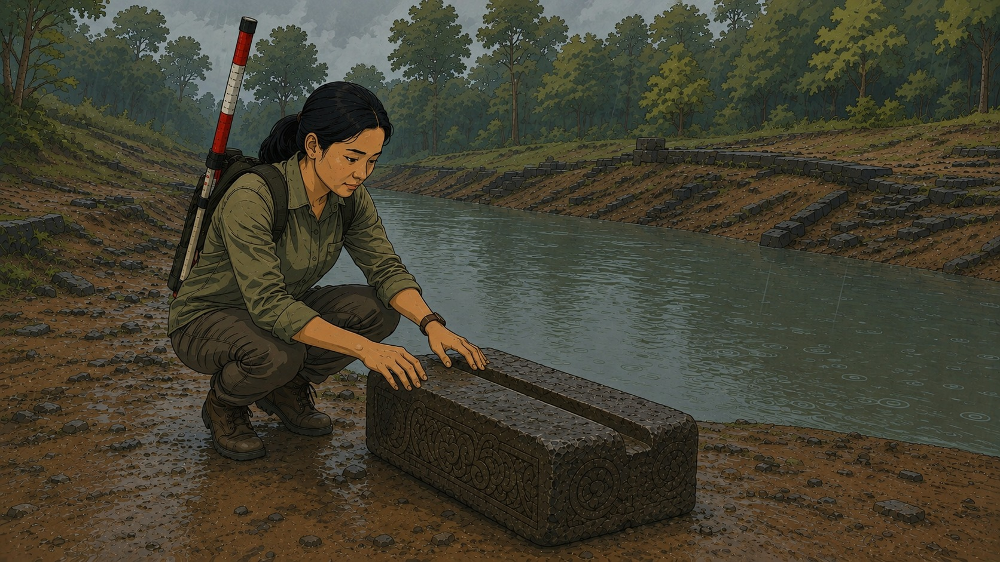
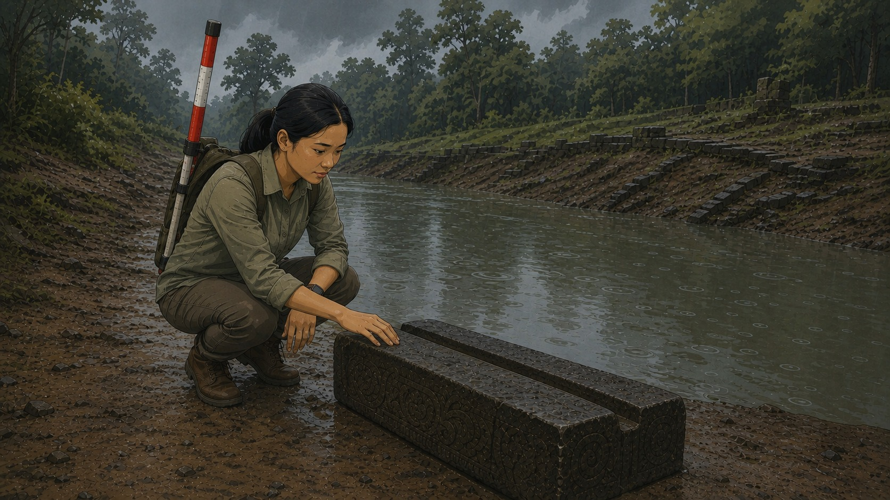

SH001 · 5s · master / wide
first_last


状态干衣干发低马尾，背包侧竖绑红白测量杆，左腕黑表带手表，腕上无绳；石槽完整：顶面一道纵向U形通槽贯穿全长
任务交代近岸石槽与画右河道，锁定速卡背杆蹲槽。
一个动作速卡背着测量杆蹲在旧河道石槽前
入本集起幅，暴雨将至，人已蹲在槽边
出她右手伸向石槽凹痕
左石槽与蹲着的速卡，近岸中偏左
右河水及河道深处
视线速卡看石槽凹痕
运镜push：不从河岸全景推到人槽，就分不清她与石槽在近岸偏左、河在画右。
几何24mm · high · standing
光storm-day · 画右上方 · 阴云漫射 · 冷青灰
服装sokha-dry
QC：pass